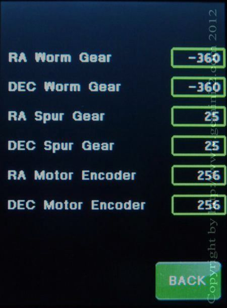

| Interactive Hand-Controller Menus - click on green button to Navigate |
|  |
This screen is for configuring custom gear ratios for custom mounts. Please see the table below for gear ratios used by some standard mount types. You can click on any of the values and change them. If you do, your mount type will automatically be changed to custom mount. The gears shown are for a HGM200/MI-250 |
| This is the default gearing setting on the Gemini-2 Models by type |
| This is the default Gearing settings for the different types of mounts, in the Gemini-2 as of March 17, 2017 firmware and later. |
| G8 | G11/ G11G |
HGM200/ MI250 |
Titan 254 | Titan3 | G11T1 | G8112 | |
| RA Worm | 180 | 360 | -360 | -270 | -270 | -270 | 360 |
| Dec worm | 180 | 360 | -360 | -270 | -270 | 360 | 180 |
| RA Spur Gear | 25 | 25 | 25 | 25 | 50 | 25 | 25 |
| DEC Spur Gear | 25 | 25 | 25 | 25 | 50 | 25 | 25 |
| RA Motor Encoder | 256 | 256 | 256 | 256 | 256 | 256 | 256 |
| Dec Motor Encoder | 256 | 256 | 256 | 256 | 256 | 256 | 256 |
| Default RA Motor Direction | CCW | CCW | CW | CW | CW | CW | CCW |
| Default DEC Motor Direction | CCW | CCW | CW | CW | CW | CCW | CCW |
| Serial Mount # | 1 | 2 | 3 | 4 | 6 | 7 | 8 |
|
1: is a Titan RA and a G11 DEC. 2: Is a G11
RA and G8 Dec, 3: The Titan 50 type is now just Titan,
4:The Titan 25 is no longer selectable. The HGM200 and MI250 have
been combined. The Serial mount # for the MI250 of 4 still exist
in the firmware. The HGM200 serial Mount # is 5. The Worm Ratio Count for RA and DEC are the number of teeth on the large Worm gear. The RA and DEC Spur gear is the reduction ratio of the Gearbox. The RA and DEC Motor encoder is the number of encoder ticks on the encoders located on the end of the motors. |
| The way to tell a Titan 50 from a Titan 25, is that the Titan 50 has a sliver with rounder corners worm block, while a Titan 25 has a more squared black worm block. Note: The Titan 50 has a 2:1 ratio gearing leading into the worm assembly, which is after the 25:1 gearbox, resulting in a total 50:1 Equivalent Spur Gear count. |